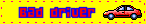

ABOUT ME
I don't enjoy writing about myself because I do not know who I am exactly. I am always changing, with a core that eludes understanding, even for myself. Why even bother with having an about me then? I guess I just want to be heard in some way? Even if I never get to confirm that someone out there has heard me or understood me, it's nice to hope.
This is hard because I want to maintain a bit of mysterious anonymity but I also have this constant burning urge to express myself.
Also I don't believe in personality tests because most people take them aspirationally but I do think that is valuable to know! The results tend to be who the test taker aspires to be, not who they truly are. But to me, it is still nice to know what kind of a personality someone might aspire to, or what kind of person they are trying to be and project onto the world! I guess this is my long winded way of saying I will not be posting my MBTI, or DnD alignment or astrology sign lol. BUT I WILL POST MY MENTAL HEALTH DIAGNOSES! Jk no, figure it out! :D
WHOAMI
inyourcomputer\dove
Some of my favorite things:~
Animals: Cats, Cheetahs
Music: Alt, Grunge, Goth, NuMetal, Pop Punk, Garage, Punk, Phonk, Breakbeat, DnB
Books: Dune, American Gods
Movies: Romeo + Juliet, Moulin Rouge, Drive, What Dreams May Come, Judge Dredd, Batman Forever, Mystery Men, Little Nicky, The Matrix
TV Shows: Adventure Time, Futurama, Crash Landing on You
Games: Minecraft, World of Warcraft, Diablo, Stardew Valley, Final Fantasy, Overwatch

Like many of you, I grew up with computers. I had a chronically online childhood. Sometimes I wish I wasn't such a chameleon who also likes to burn bridges. I have always been the type to always be moving around from one situation to another, both irl and digitally. I am making an effort to be more permanent. I'm tired of reinventing myself and starting over again and again. Also, I miss the online communities I used to be a part of, but I have no way of getting back to them.

World of Warcraft had a huge impact on my life haha. This is where I would hang out after school. In a weird way I am really grateful for having spent a significant chunk of my childhood in games because I can always log onto WoW and go on a little nostalgia trip. At the very least, there is something very comforting about just existing in game.

If you ever ran into a shadowpriest named Ibuprofen back in Burning Crusade, that was me! :3 (i don't remember the server x.x)
Even earlier than that, I was really into the Sims and a pet keeping game called Petz! The game came with a website building kit for people to make their own fanpages. Honestly, thank you to the devs of Petz for sparking my interest in building websites as a kid.


MORE FAVS
INFO
STATS
Season:
Holiday:
Color:
Food:
Drink:
Winter
Halloween
Red
Soup
Milk Tea
Location:
Pronouns:
Mood:
Online
She/Her
Volatile
Strength:
Dexterity:
Constitution:
Intelligence:
Wisdom:
Charisma:
8
14
10
12
9
14